Part One: Tom
The time is May 2020. The COVID-19 pandemic has shut down much of public life across the world. The death toll in the United States alone is set to surpass 100,000. However, there is a bright spot in all of this: there is promising news out of Germany and the United Kingdom about two revolutionary vaccines against this novel disease. The mass production and distribution of those vaccines is still six months away though. In the mean time, large numbers of people are convinced that COVID is not as dangerous as it seems.
We will center our story on one of these people. His name is Tom. In the midst of all of this chaos, he is stuck at home with nothing but time on his hands. He has been spending a lot of this time on the Internet, finding articles to reinforce his notion that COVID-19 is less dangerous than we are being led to believe. Despite the mounting evidence and the increasing number of deaths, Tom remains adamant about his beliefs. He refuses to wear masks, practice social distancing, and even getting vaccinated when the vaccines eventually became available. This leads to him not taking precautions: gathering indoors with his friends, not wearing a mask, and preemptively announcing that he will not be getting vaccinated. When his friends and family try to bring him around, he counters with the articles he's been reading. And as he becomes more alienated from his friends and family, he starts to go deeper into his articles.
In one incident, Tom attended a large social gathering and contracted COVID-19. Despite experiencing severe symptoms, he refused to get tested or seek medical attention, believing that the virus was not real. As a result, he unknowingly spread the virus to several people at the gathering, including a vulnerable elderly woman who later passed away due to complications from the virus. Tom's actions did not stop there. He continued to spread misinformation and conspiracy theories about the virus on social media and to anyone who would listen. His behavior not only put his loved ones at risk but also contributed to the overall spread of the virus, which led to many more deaths and illnesses. Furthermore, as Tom started to go deeper into conspiracies involving COVID-19, he was exposed to even more theories. For example, he started believing an article he saw about the vaccine being a way for governments to control the populations of their countries. That led him to articles about how the deep state and illuminati are controlling those governments. Then, after the 2020 election, all of those sources started printing articles about how nefarious forces were trying to steal the election, and started pushing people to show up at the U.S. Capitol on January 6th, 2021.
The thing is, these articles don't end with "COVID is overblown." No, that is just where they start. Those articles lead Tom to more articles. COVID skepticism leads to vaccine skepticism. Articles about why vaccines are bad mention how they are used for population control. Curious about what is going on with population control, Tom finds articles about how it is a means to the end of ushering in the New World Order. New World Order articles kept mentioning George Soros and the Deep State, so Tom started to read more about those, and eventually articles about election interference started popping up in his feed. Those ones started urging readers to show up at the US Capitol on January 6th, 2021, and the rest is history. In short, we observe a spiralling effect that started with believing COVID-related conspiracy theories and escalated to something more intense.
Part Two: The Rabbit Hole
This story is, of course, a fiction, but it contains a grain of truth. There is no shortage of academic research, news, and popular discourse illustrating how people fall down this rabbit hole. However, not everyone takes this same path. Some people might start being skeptical of "Big Pharma" and find their way to Flat Earth. Others might have doubts about Princess Diana's death and end up thinking that the government is hiding evidence of alien life. How then might we map these relationships between common concepts in the world of conspiracy theories?
One way to map this has emerged in the LOCO corpus. This is a 88-million-word corpus compiled by Miani et al. and released in 2021. By bringing together the text of thousands of articles about hundreds of topics, it enables us to use modern techniques in text analysis and natural language processing to study the relationships between these topics.
If each of the 'paths' that someone can take from conspiracy to conspiracy is a rabbit hole, then we suppose our goal is to map the whole warren. Unlike young rabbits though, we are not going in blind: we have generated a set of hypotheses about how these conspiracies will be linked. These hypotheses come from our groups' long-standing interest in the world of conspiracy theories.
In short, we hypothesize the following:
- Conspiracy theories will 'cluster' together around certain topics, for example public health, political figures, or phenomena like UFO sightings.
- These clusters will be linked together by a few 'hub' conspiracies which easily tie into many others: things or people like the New World Order, George Soros, or COVID.
- Most of these articles will display negative sentiment, e.g. anger or fear.
Part Three: Topic Modelling
Methods
Before modeling the data, we needed to clean and preprocess all the text data in the main corpus. The following steps were taken:
- Tokenize the words
- Remove all stopwords, punctuations, and special characters
- Convert the text to lowercase
- Lemmatize the text, reducing each word to its root form
We then used Non-negative Matrix Factorization (NMF), Latent Dirichlet Allocation (LDA), Latent Semantic Analysis (LSA), and BERTopic to perform topic modeling. These algorithms are described as follows:
- Non-negative Matrix Factorization (NMF): Aims to discover latent patterns in the data by reducing its dimensionality while preserving its non-negativity constraints. In topic modeling, NMF takes a document-term matrix as input, typically created using the Term Frequency-Inverse Document Frequency (TF-IDF) representation, and extracts topics as linear combinations of the most significant terms.
- Latent Dirichlet Allocation (LDA): A generative probabilistic model that seeks to discover hidden topics in a collection of documents. It is based on the assumption that documents are composed of a mixture of topics, and each topic is a probability distribution over words. By leveraging the Dirichlet distribution to model the document-topic and topic-word relationships, LDA can uncover the underlying structure of the data.
- Latent Semantic Analysis (LSA): Applies Singular Value Decomposition (SVD) to the document-term matrix, often transformed using the TF-IDF representation. By retaining only the most significant singular values and their corresponding singular vectors, LSA projects the high-dimensional data into a lower-dimensional space, called the latent semantic space. This space captures the underlying relationships between documents and terms, revealing hidden topics in the process.
- BERTopic: First leverages a pre-trained BERT model to create dense document embeddings that capture the semantic meaning of the text. These embeddings are then reduced to a lower-dimensional space using UMAP (Uniform Manifold Approximation and Projection) and clustered using the HDBSCAN (Hierarchical Density-Based Spatial Clustering of Applications with Noise) algorithm. The resulting clusters represent the topics described using the most relevant terms. BERTopic offers several advantages for topic modeling, including improved semantic understanding, better handling of context-dependent words, and the ability to capture fine-grained topics.
We then created an algorithm that measures the coherence scores across various topic sizes in order to determine the optimal number of topics each algorithm should divide the words into. We generated graphs for NMF, LSA, and LDA to visualize the coherence scores. BERTopic was not included in this step, as it automatically generates the optimal number of topics and has demonstrated effective performance.
Results
Let us start by analyzing Non-negative Matrix Factorization (NMF) results. This is what the coherence graphs for NMF look like. (NOTE: We broke up some of the graphs due to computational constraints; the x-axis represents the number of topics, and the y-axis represents the Coherence Scores for all of these graphs)
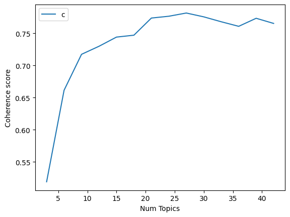 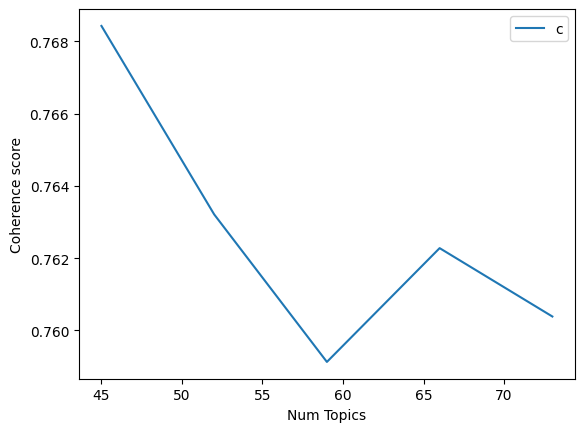
So as you can see, this shows us that when we ask the model to model the text into 27 topics, the topics are the most coherent. This is why we trained the LDA model with 27 topics; here are the top 5 topics; as you can see, it did a good job of keeping the topics distinct (Index 1 had all of the outputs)
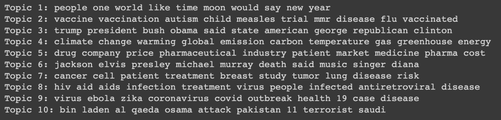
This took a substantial amount of time to train but produced good results. It does a fairly good job of creating results between topic sizes 10 and 40, which makes it more applicable in different scenarios.
Now let us move on to Latent Semantic Analysis (LSA); this is what the coherence graphs for LSA look like
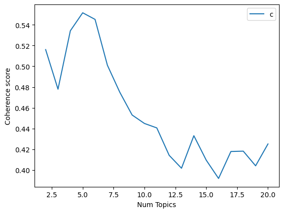 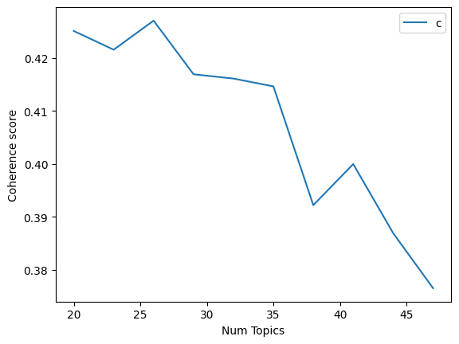
As you can see, this technique gave the best results when the number of topics was 5. This performed worse than the others giving a peak coherence score of only 0.54. This can be seen in the results below. Additionally, it gives the best results for 5 topics. This is a very low number for a larger dataset. This may have been caused due to a few reasons; LSA uses SVD, which makes it susceptible to noise which could adversely affect its performance; furthermore, it assumes a linear relationship between terms and topics: and documents and topics, which can limit its ability to capture more complex relationships. This was, however, fairly quick to train compared to the other models.
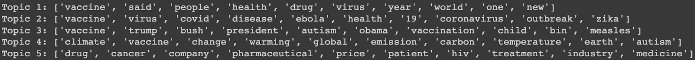
There is also a decent amount of overlap between the topics and we know that there can be more distinct topics.
Let us now take a look at Latent Dirichlet Allocation (LDA); this is what the coherence graphs for LDA looked like. (we have three graphs here as the second graph seemed to have a lot of upward momentum)
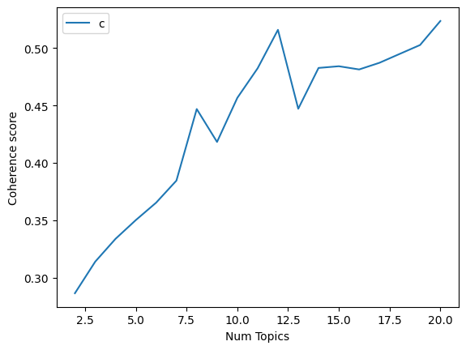 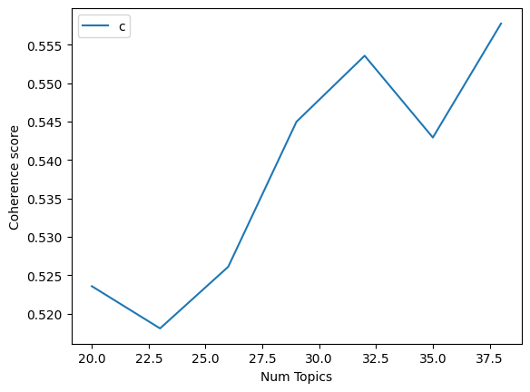 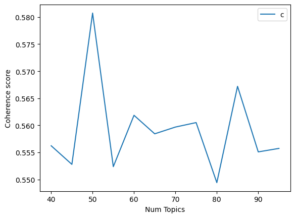
This performs fairly well as you can see in the topics below.
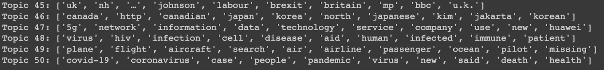
This performed better than LSA but was significantly worse than NMF. This, however, took a fairly long time to run, which makes it suboptimal to use for most scenarios where time is a concern. As the graphs show, this is a very sensitive model and changes a lot based on hyperparameter tuning. It seems like the dataset characteristics suit NMF the most so far.
Next up, we have BERTopic, which was fairly efficient and also gave the best results. As you can see below, it was able to create 266 distinct topics, and we also created an intertopic distance map to be able to visualize this data, and it gave us the best results as you can see below. It has a score of 0.75476.
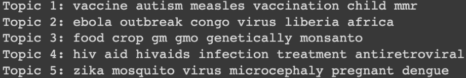
We also have the intertopic map (below) which you can access on the website that we have linked to the project. It showed how much different topics related to one another and how prevalent/important they are with respect to the entire dataset. The closer the two topic circles are, the more related they are, and the larger the circle, the more prevalent it is. You can hover over the circles to find out what these topics are.
Part Four: Sentiment Analysis
Upon generating topics and their associated keywords, conducting sentiment analysis on those keyword sets would be a helpful next step. Besides giving us useful information about what emotions are associated with the topic keywords (and therefore with the articles that include them), we would also be able to identify interesting outliers (if any) in terms of positive sentiment conspiracy theories. We have selected a Hugging Face model to help us do this. It is called distilbert-base-uncased-emotion and for an input string, it displays that string's percentage distribution among 6 different emotions, namely love, joy, sadness, anger, surprise, and fear. We append this percentage distribution as metadata to each of our topic-keyword sets. Finally, for each of our topics, we used their primary emotion i.e. the emotion with the highest percentage to then plot a distribution of that topic versus their primary emotions.
For NMF: 7 topics classified as joy, 10 topics classified as fear, 7 topics classified as anger, and 1 topic classified as sadness
For LSA: 3 topics classified as joy, 6 topics classified as fear, 1 topic classified as anger
For LDA: 22 topics classified as joy, 7 topics classified as fear, 20 topics classified as anger, and 1 topic classified as sadness
For BertTopic: 80 topics classified as joy, 103 topics classified as fear, 77 topics classified as anger, 6 topics classified as sadness
At the onset, we expected most (if not all) of these conspiracy theories to elicit negative expressions. This reasoning is mainly driven by personal experiences - where we interact/are exposed to these conspiracy theories in conversations, tabloid articles, social media posts, etc. Furthermore, the empirical observations made throughout the project are similar to the narrative presented i.e. the fear/stress-inducing conspiracy theories prevalent during COVID. However, we were surprised to see some of the topic cluster keywords having been classified as joy. This somewhat contradicted our above (initial) expectations. We could potentially rationalize this phenomenon as follows: looking at the keywords in isolation in conspiracy theories surrounding, let's say, music/art forms/royalty, etc. would be joyous since the net amount of text written about these topics would be intuitively considered to be positive albeit controversial. An example topic cluster classified as joy is "diana princess prince royal harry queen". In this example, besides focusing on the word 'princess', it generates a net positive sentiment considering the allusion to Princess Diana. Hence, we foreshadow that if the names/related words about a person who was well-liked (overall) was included in a topic cluster - with no other words overshadowing the net positive content written about that person outside - it could make the net sentiment classified for that cluster as positive. Hence, "diana princess prince royal harry queen" was classified as positive, but, based on our analysis, "diana princess tunnel death journalist" could be classified as negative.
Part Five: Keyword Extraction
Starting with the search terms that Miani et al. used to compile LOCO, we put together a list of 127 keywords that captured a number of topics in the conspiracy world. We then used these as so-called "candidate keywords" which we passed to the KeyBERT algorithm. In short, KeyBERT uses a large language model to generate word embeddings -- context-aware numerical representations of words -- and then compares those to the list of candidate keywords. If the meaning of the article is close to any of the keywords, then it marks the article as containing that keyword.
How does this help us map these theories? With the addition of another algorithm, or rather class of algorithms, called pattern mining. Pattern mining is how sites like Amazon know what to recommend you buy with the items in your cart: by looking at thousands of carts, they might notice the pattern that most people who buy a phone charger put an extra cable in there. These patterns are called "association rules" and they take the form of directed rules, e.g. charger => cable. This means that an order with a charger in it is more likely to include a cable. The reverse is not necessarily true: if someone is replacing a broken cable alone, they are not also going to buy a charger. We use that same approach here, but with articles instead of shopping carts, and keywords instead of items.
Specifically, we use the apriori algorithm to build these rules. While this algorithm can build rules of any length, we only generate rules of length two like the charger example above, although our rules look more like "UFO => aliens." We do this both for ease of visualization ("UFO => alien, atlantis" is harder to put on a chart) and to identify discrete "jumps" that someone can take. These "jumps" are what we were talking about in section one: where Tom goes from vaccines to microchips to Illuminati.
In order to identify these "jumps", we created an interactive visualization, which you can see below. Each node represents a keyword, and the size of the nodes is proportional to the number of occurrences of that keyword. The direction of tha arrows between the nodes denotes the direction of the association rule. The thickness of the lines represents the strength of the relationship, measured with a metric called lift. The slider at the top will adjust the lift threshold at which a line is drawn, so higher values will lead to fewer lines. See if you can find a path from COVID to something like "election interference." You can double click on nodes to see only their connections and scroll to zoom in an out. If you don't see anything, try zooming out.
By adjusting that threshold slider, we can also identify "clusters" of theories. For example, as you move the slider up, chemtrails, global warming, climate change, and weather control all end up in a cluster where they are only connected to each other. Additionally, only keywords that were connected to anything under the least stringent threshold are included. A few keywords were not connected to anything else in the chart. These fell into three classes. The first was celebrity deaths: while their topics are closely connected, they tend to all occur in isolation, e.g. no articles think that Michael Jackson's death is related to Tupac's. The second was newer terms: things like "cultural Marxism" which don't show up much in the corpus which only goes up to mid-2020. Finally, we had a few surprises.
- The keyword "2000 election" was not connected to any other political conspiracies, maybe because the internet was less big during that time.
- "Mayan calendar" wasn't connected to anything else, which is surprising because it was big in apocalypse theories around 2012, which are present in the rest of the dataset.
- "Crisis Actor" wasn't connected to any of the other mass shooting conspiracies despite Alex Jones' insistence otherwise.
- "Bermuda Triangle" wasn't connected to any alien conspiracy theories despite aliens being a major explanation for mysterious disappearances there.
These keywords were validated manually by taking a sample of the articles and comparing their text to they keywords that they generated. In addition to guiding how we tuned KeyBERT's hyperparameters, this process also necessitated a few tweaks to the keywords we were using. Most notably, "alien" had to be removed because it was coming up on articles about extraterrestrials and In that keyword tuning process, we also had to introduce a few double keywords, for example "COVID" and "Coronavirus" which the algorithm didn't recognize as essentially synonyms.
Part Six: What Does this Mean?
In part two, we put forward three hypotheses.